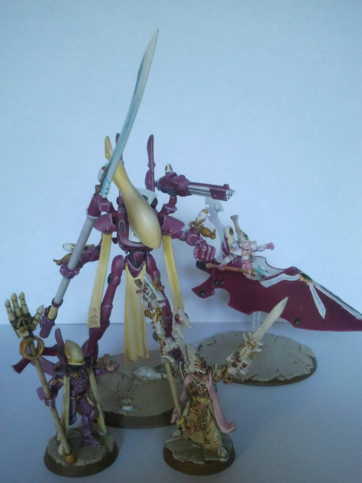
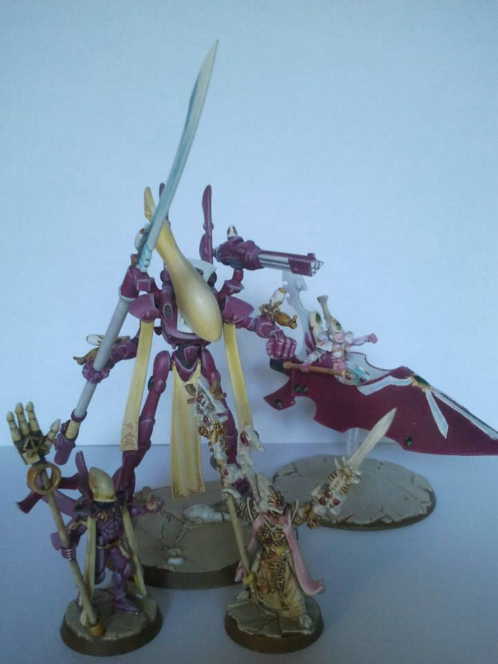

Who is Erik?
Hello, reader. It looks like you are interested on knowing about Erik. There is much to say about him. Way more than what fits in this page, but let me tell you that Erik is a very interesting person, with experience in many different fields and knowledge beyond normal comprehension. You can trust me on that, as I know him very well. In teh subsequent paragraphs you will elarn about Erik´s past, experience and motivations, but I want to start talking about his charater.
The most relevant thing to say about him, that what he embraces as part of his identity, is that Erik considers himself extremely inteligent. He supports this concept in his membership in MENSA and the fact that he has studied, and continues studying, many fields. He is a biologist, a linguist, a teacher, a programmer, and a father. Erik has studied thirteen languages, including human, programming and dead languages, although he speaks fluently just half a dozen of them.
But what about his character? How does he handle other human beings? Is he a good communicator? A good Leader? A good coworker or friend? According to the last test he did, on june 2018, Erik is a helpfull and warm person, optimistisc and steadfst, that enjoys the company of others, although is reserved and do not leads conversations. Erik si also imaginative, innovative, curious, driven by new challenges, and somehow a daydreamer, but not eager to take risks, not before having thoroughly studied and analysed every case and consequence.
So, do you still want to learn about Erik? Then you can contact him directly, ask the people that knows him best or let him talk about himself in this page. There are icons to the left that can lead you to the different sections. Go and try them.
Erik the Programmer
My interest on computers started when I was very young, around 10 years old. My family bought a NES and we played together Super Merio Bros. I keep good memories of those family events. I was the only member that baceme intressed on that kind of technology, though. During my early years I studied MS-DOS and received my first computer at the age of 16. The computer came with some games and a course in Delphy that I found kind of boring.
Then I started learning biology at university, and I had no time to keep learning computing sciences, untill I moved to Sweden and decikded to give another try to that hobby. I started making simple games and tools that could help me and other in common tasks, like the production of teaching material.
I have been programming for three years now and I feel experienced and confident enough to make a profession out of my hobby and start loking for a position as a software developer.
Languages and programs
| Languages | |
| C# | I want to specialise in C# and .Net. Therefore I train it as much as I can. |
| CSS HTML | Front-end is beautifull. Let´s learn a bit of it! This very page is my first project in these languages. |
| GML | Game Maker´s own language. A perfect language to start learn programming. |
| Programs | |
| Visual Studio | A perfect tool to help programming effective and efficiently. |
| GameMaker | Easy to learn, easy to understand and easy to fall in love with. GM taught me how to love your own simple creations. |
| RPG Maker | Very easy classical RPG games maker. From simple filling of tables to actual programming. |
| Open Office | Complete and open source editor. Works with tables, text, databases and presentatins. |
| Brackets | Simple yet powerfull tool for web design. Thanks, brackets, for making this Web possible. |
| Blender | A complete tool for 3D design, animation and even video editing. |
| InkScape | Opensource vector image editor. |
| GIMP 2 | Open source bitmap image editor |
| Sprite | Small program for simple skeletal animation. |
Courses
| Microsoft Virtual Academy | C# Fundamentals for absolute beginners | Very basic still usefull course on C#. |
| SoloLearn | C# Tutorial course | Complete course on C#, although the exercises were extremely easy. I had to apply what I learned in order to actually learn it. |
| SoloLearn | HTML Fundamentals course | Usefull course and reference for new users of the language. |
| Sololearn | CSS Fundamentals course | Useful explanation of resources in CSS. Quick to learn and to start using. |
On the scope. I plan to learn at least a basic level of JavaScript, Unity, Unreal, Powershell, MySQL, and others tools I do not know yet.
Projects
- Efrik´s Quest: A small game done in RPG gamer for my friends on youtube. The link points to one of these friends playing the game.
- Quest for the eight trophies: Objects made in Blender for a board game in Tabletop Simulator. Absolutelly not related to Warhammer:Silver Tower.
- Sopa de letras: First in a series of videos of me programming on Game Maker. Quite boring.
- Meteor Escape: A small game that I made almost entirelly on my own, with Game Maker. Available in the Google Play store.


Erik the Biologist
Do you like dinosaurs? As a kid, I did love dinosaurs. You can´t blame me. Jurassic Park came out when I was eleven.That interest drove me int studying biology. More specifically Laboratory biology. Protein sinthesis, PCR, doble membrane and the like are concepts familiar to me.
Short after finishing my studies I started as a laboratory technician and a couple years later I was upgraded to Laboratory chef, getting a worker under my supervision.It did not last long, though, as these were hard times for Spanish economy. So I left the company I was hired by one of our customers. That did not long, either, so I finally decided to move to Sweden, expecting a better future in the middle of the snow.
Something happended here in Sweden that made me rebuild my interest in life. I found a new perspective, a new culture, that showed a deep respect and care for nature and environment. I had never seen the world from that perspective, and I think it is extremely beautiful.
Dionsaurs are still super cool, though.
Studies in the field of biology
| University of Alicante | Biology | 2000-2006 |
| Without a formal specialization, although I followed the program for laboratory biology. | ||
| University of Växjö | Bioenergy technology | 2007 |
| I followed my wife in Växjö and learned more about technical biology. that was my first encounter with real environmental sustainability. | ||
| University La Sapienza | Erasmus Grant | 2006 |
| I spend some few months in Rome as an erasmus student. More than anything, I learned that there are different cultures and different perspectives over things, all different but none more valid than the others. | ||
Experience in the field of biology
| Preparados y extractos botánicos. | Lab technician and chef | 2007-2010 |
| I started as laboratory technician in a small company dedicated to the production of botanical extracts. I left the company to study in Växjö, but soona fter I returned I was asked to work again in the company. Finally, I felt as my work there was kind of meaningless, as I could not spot how my work was actually helping people. | ||
| New Developments in nutraceuticals | Laboratory chef Database techncian | 2010-2011 |
| I started as a substitute for the laboratory chef in a company that had been a customere of the company I had previously worked for. When the chef returned I was kept in the company, but my tasks were redirected into something more computer oriented, as I had proved myself skilled in authomatisation and programming. | ||
Erik the Teacher
Whe I arrived in Sweden I was asked what did I wanted tod o with my life. The idea of evolving constantly, continuosly learning adn even changen someones career was something that I ahd never considered. At that time, I knew I missed contact with other human beings in my work. Laboratory work can be lonely. So I decided to prepare myself to become a teacher in biology, so that I could help other to see the wonders fo science as I see them.
That was no easy task, though. It took me over one year to finish all mandatory courses in Swedish. Then I had to wait to the next course to start learnign about teaching. Then I had to study in Swedish, wich I did not completely understood, despite my finished studies, and at the same time I was studying Spanish, as most teachers in Sweden have at least two subjects. Overall, what should have been three years studies became a slow progression that has taken over five years and si still not finished (although it is almost done!).Soon I will eb elgally accepted as a professional studied teacher.
If I had to describe my methodology I would say that it puts focus on knowledge in its different forms. Facts are easy to find, so I prefer to train in my students their critical thinking, analysis and understanding of the subjects. I am willing to explain everything and challenge students into rethinking their conclussions. I try to give personal education and I think that feedback is the best tool for this. I expect motivation to come from results and discussion.
Experience and studies in pedagogy
| Linnéuniversitet | Completting Pedagogy Studies | 2015-today |
| I have been studying pedagogy for longer than expected. I have biology as my first subject and I have earned enough credits in Spanish to ahve it as my second one. I can also teach chemistry, maths and programming. | ||
| Linnéunivesitet | Spanish | 2014-2016 |
| It may sound weird, but learning Spanish was exciting and challenging. It is not easy, not even natural, to critically consider one´s own language from a grammatic or semantic perspective. After that I have been asked to help at the university a couple of times, as techer and helping students in their final work. | ||
| Folkuniversitetet | Courseleader in Spanish | 2015 |
| I have lead two courses in Folkuniversitetet, a school for adults, in Växjö. Adults are the best students, I think, although they are also the most varied, wich makes teaching for them all a real challenge. | ||
| Växjö kommun | Substitute teacher | 2014-today |
| I have worked as ocassional teacher in several schools and subjects in Växjö. My conclussions are that I prefer working with teenagers adn adults in STEM subjects. | ||
Erik the Geek
I have allways been a Geek. I like scy fy, fantasy, puzzles, videogames, and as I allready said, dinosaurs. There was even a time when I loved manga.
I have collected Warhammer miniatures for over twenty years. From where my favorite factions are lizardmen and Eldar. I have learned lots of things from that hobby, like taking your time on working on details and the releveance of statistics and calculations before taking any risk.
I enjoy videogames as I ahve allways done. I started playing when I was around ten, with Super Mario Bros on a NES, and today I count over 700 games in mi Steam account, mostly thanks to humble bundle, which I will never be capable fo playing. I enjoy most puzzle games like Antichamber or Human Resource Machine, RPGs like Pillars of Eternity, and strategy games like Total War and X-com, but I also apreciate the lore and design of other titles like Overwatch.
 
